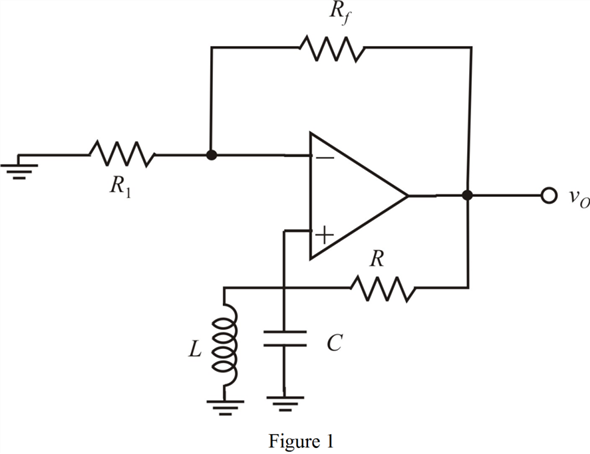

To get condition for sustained oscillations, the bandpass function must be purely real.
Equate the imaginary part of to zero.
Thus, the frequency of oscillation is  .
.
Refer to Figure 16.18 (d) in the text book.
Draw the circuit for the sinusoidal oscillator consisting of the op amp inverting amplifier.

Refer to equation 16.39 in the text book.
Write the expression of the bandpass function of the bandpass filter implemented by RLC resonator.
Substitute .
Multiply and divide with .
To get condition for sustained oscillations, the bandpass function must be purely real.
Equate the imaginary part of to zero.
Thus, the frequency of oscillation is .
The gain expression of the op amp inverting amplifier is,
Substitute  and .
and .
Thus, the gain of the amplifier for sustained oscillations is .
(a)
Determine the value of  for
for  percentage change in its value.
percentage change in its value.
 percentage change in the value of
percentage change in the value of  .
.
Calculate the percentage change in resonant frequency.
Thus, the percentage change in resonant frequency is .
(b)
Determine the value of  for percentage change in its value.
for percentage change in its value.
Determine the frequency of oscillation for percentage change in the value of  .
.
Calculate the percentage change in resonant frequency.
Thus, the percentage change in resonant frequency is .
(c)
The resonant frequency is not depend on the resistance  .
.
Therefore, the resonant frequency does not change even the resistance value changed by .
.